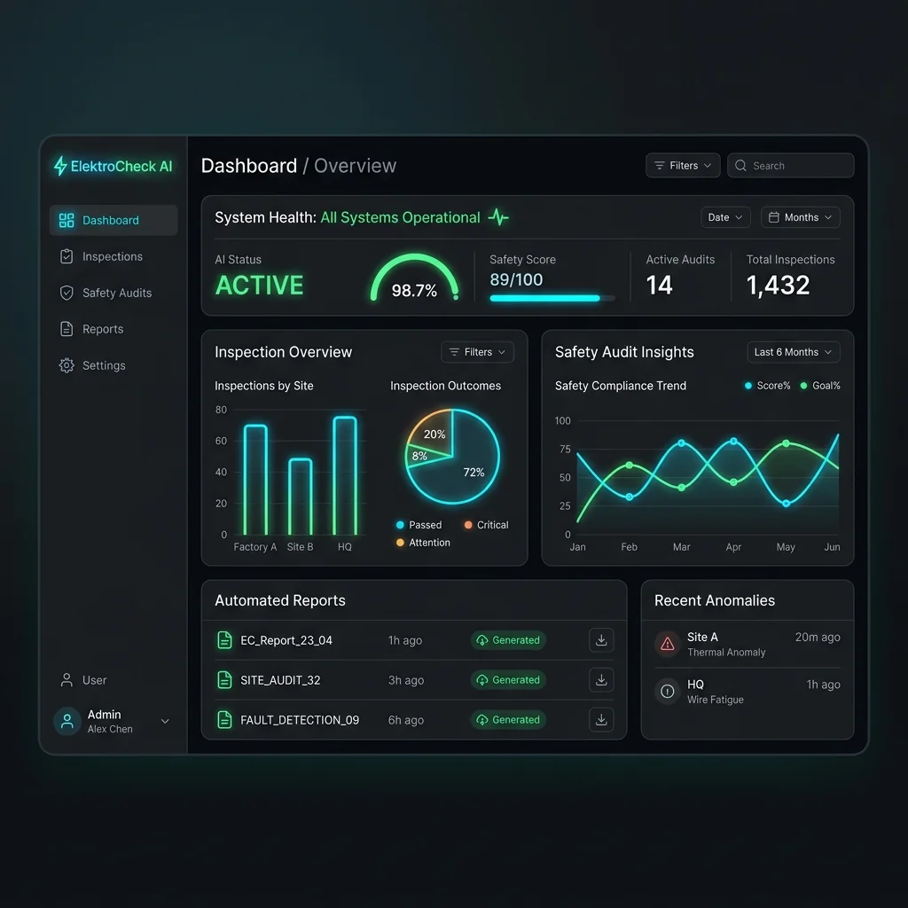

⚡ ElektroCheck AI — Intelligente Prüfberichtsanalyse⚡ ElektroCheck AI — Intelligent Inspection Report Analytics

ElektroCheck AI ist eine intelligente Web-Applikation zur Analyse von DGUV V3 Prüfprotokollen. Mittels künstlicher Intelligenz scannt die Anwendung Sicherheitsberichte von Elektroprüfungen, identifiziert Anomalien oder Mängel im Text und schlägt vollautomatisch strukturierte Maßnahmenpläne vor.
ElektroCheck AI is an intelligent web application for analyzing DGUV V3 safety inspection reports. Powered by artificial intelligence, it scans safety reports, identifies anomalies or defects, and generates structured action plans automatically.